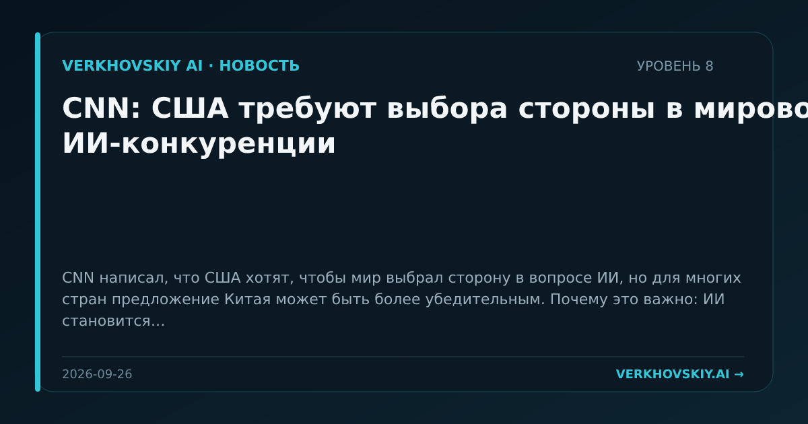

CNN: США требуют выбора стороны в мировой ИИ-конкуренции
CNN написал, что США хотят, чтобы мир выбрал сторону в вопросе ИИ, но для многих стран предложение Китая может быть более убедительным. Почему это важно: ИИ становится не только рынком технологий, но и формой международного институционального выравнивания. Для стран-покупателей это означает выбор не отдельной модели, а режима зависимости.